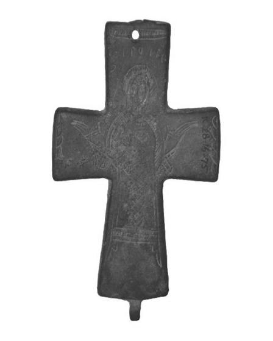
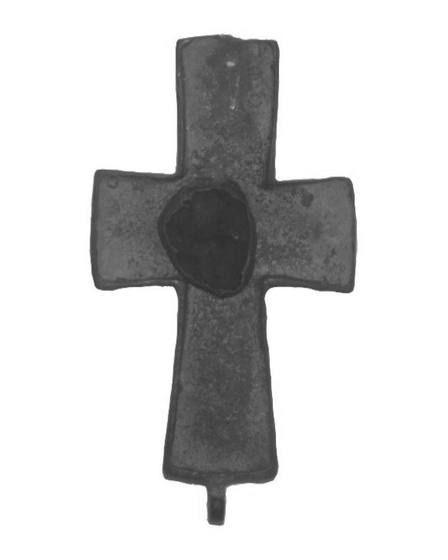

Catalog › CE-0287 · BRD2019-1
Valvă de encolpion de bronz cu sfânt orant, cat. 1, Muzeul Burdur
sec. XI (1001–1100) · loc necunoscut · Muzeul Burdur (Burdur Müzesi), Turcia, inv. K. 28.16.75
single valve of a reliquary cross, bronz; c. XI (1001–1100); find spot unknown; kept at Muzeul Burdur (Burdur Müzesi), Turcia.




Identificare
- Categorie
- Valvă izolată
- Material
- Bronz
- Tehnică
- Gravare (incizie)
- Stare
- Fragmentară
- Dimensiuni
- Î 86 × L 57 mm
Iconografie
- Avers
- Neidentificat
- Descriere avers
- Cruce latină turnată; în centru un sfânt orant, cu nimb, cu brațele întinse în lateral, cu trăsăturile feței redate simplu; veșmântul până la picioare, cu linii simple incizate și un model de romburi; deasupra sfântului o gaură mică, cât capul unui ac, în care autorul vede probabil locașul unei pietre sau al unui geam colorat; brațele laterale cu motive de împletitură pe jumătate; brațul de sus cu crestături verticale încadrate într-o bordură mică.
- Descriere revers
- Fața opusă a capacului păstrat, cu o pată întunecată în centru, fără decor descris în sursă.
- Inscripții
- Inscripție incizată deasupra sfântului, nelizibilă; autorul distinge doar literele rho (Ρ) și iota (Ι)
- Limba
- Greacă
Datare și atribuire
- Datare
- sec. XI (1001–1100)
Descoperire
- Context
- Colecție (fără context)
- Coordonate
- 37.7203° N, 30.2908° E
- Precizia locului
- Loc de păstrare (loc de descoperire incert)
Păstrare și referințe
- Colecție
- Muzeul Burdur (Burdur Müzesi), Turcia
- Nr. inventar
- K. 28.16.75
- Bibliografie
- H. Metin, Burdur Müzesi’nden Bir Röliker Haç, în „Kafkas Üniversitesi Sosyal Bilimler Enstitüsü Dergisi” (KAÜSBED), 24, toamna 2019, p. 279–284 [Metin 2019], p. 282, cat. nr. 1 (piesă unică), reprodusă la Res. 1 (p. 284). DOI: 10.9775/kausbed.2019.036
- Figura
- Res. 1
- Planșe
- Metin 2019, p. 284
- Observații
- Datare după Metin: sec. XI, pe baza analogiilor din Pitarakis 2006 (cat. 1–4, 9–15, 19–25, 33–74); autorul notează că perioada 9–12 e comună pentru astfel de röliker. S-a păstrat un singur capac, cu piesele de prindere sus și jos. Autorul socotește că sfântul poate fi Sf. Gheorghe, pe baza literelor, și că inscripția, scrisă la întâmplare, poate indica un meșteșugar neștiutor de carte. Loc de descoperire: nu e dat; piesa se află în sala de expoziție a muzeului. Locul descoperirii nu e cunoscut cu precizie; punctul de pe hartă marchează locul de păstrare (Muzeul Burdur), nu locul descoperirii. Coordonate: nu sunt date în sursă.
Citare: Corpus Encolpiorum, CE-0287, Valvă de encolpion de bronz cu sfânt orant, cat. 1, Muzeul Burdur, https://vitaliejosanu1979-ux.github.io/primul-meu-proiect/piese/BRD2019-1/ (accesat 2026-10-17).